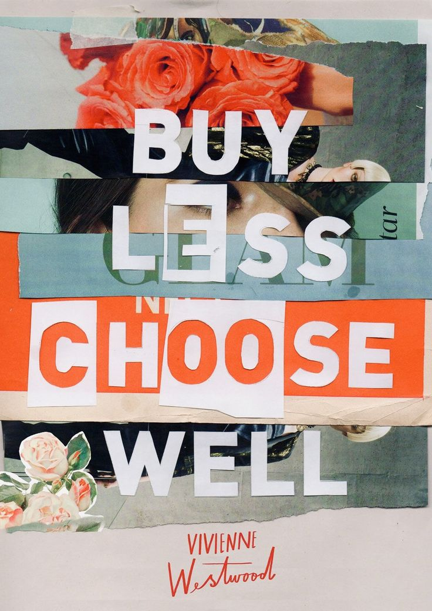
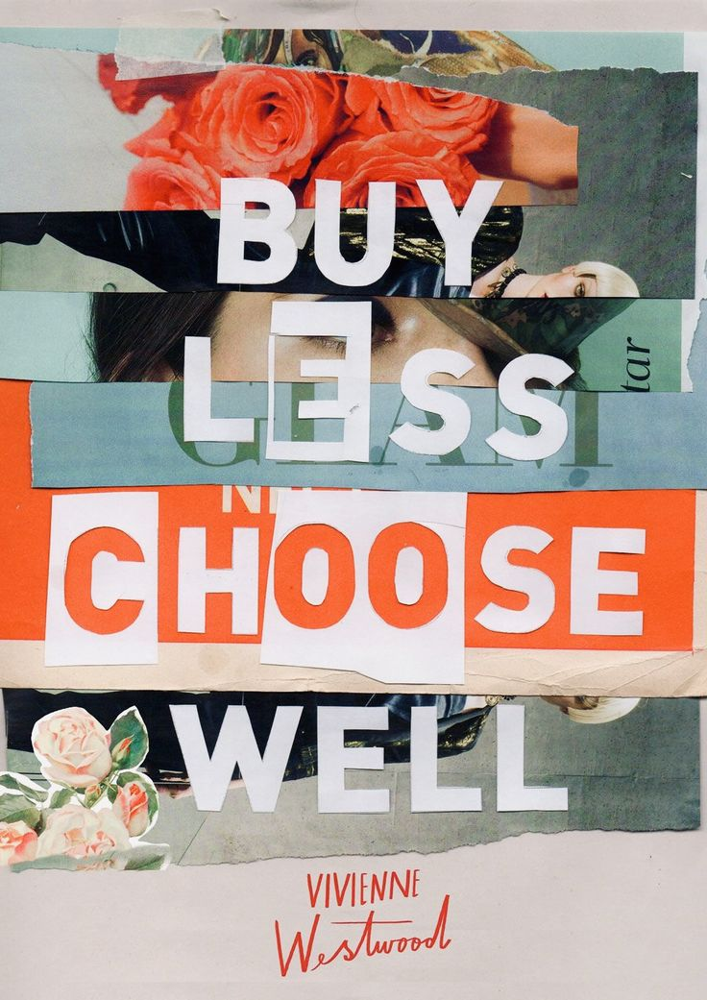

SDG 11: Building a Sustainable Batangas City for Future Generations
SDG 11 seeks to create cities and communities that are inclusive, safe, resilient, and sustainable. In rapidly urbanizing areas like Batangas City, addressing waste management and promoting sustainable consumption is essential for improving residents' quality of life while reducing environmental impact.
Aligning My IT Skills with SDG 11::
- As someone with a deep interest in fashion and a background as an IT student, I identified an opportunity to merge these passions to address a pressing environmental issue in Batangas City. Fashion is a significant contributor to waste, particularly due to fast fashion practices. To combat this, I conceptualized a thrifting app designed to promote sustainability and reduce waste in our community. The app will offer a platform where people can buy, sell, and exchange pre-loved clothing and accessories. By encouraging the reuse of items that would otherwise end up in landfills, the app fosters a culture of sustainable consumption. Additionally, it will feature eco-impact tracking, allowing users to see how much waste and resources they’ve helped save. Using my IT skills, I aim to create a user-friendly design with secure payment systems and location-based services, making the app accessible and impactful for everyone in Batangas City. Through this project, I hope to contribute to SDG 11 by promoting sustainability and reducing waste in our urban environment.
 
